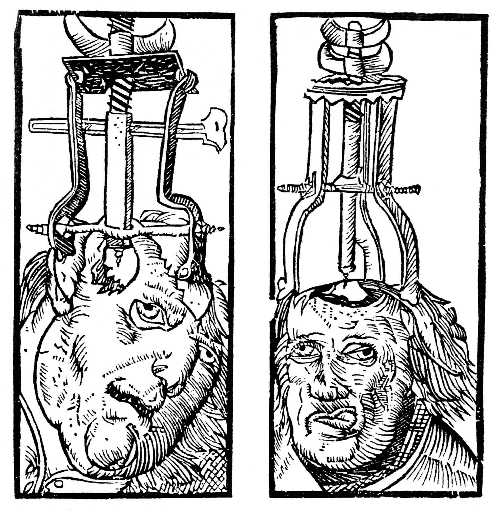
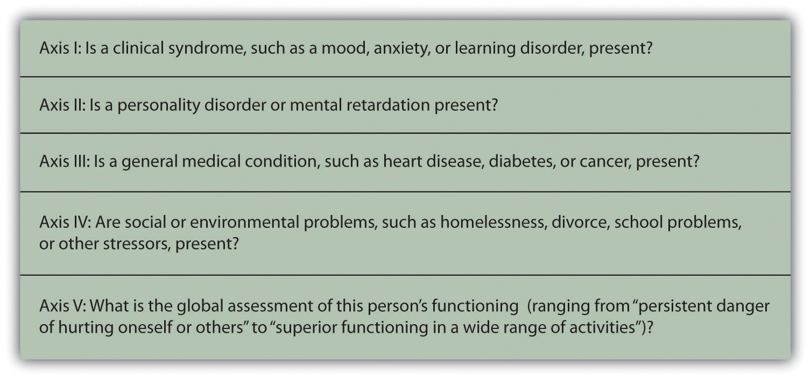

The focus of the next two chapters is to many people the heart of psychology. This emphasis on abnormal psychologyThe application of psychological science to understanding and treating mental disorders.—the application of psychological science to understanding and treating mental disorders—is appropriate, as more psychologists are involved in the diagnosis and treatment of psychological disorder than in any other endeavor, and these are probably the most important tasks psychologists face. About 1 in every 4 Americans (or over 78 million people) are affected by a psychological disorder during any one year (Kessler, Chiu, Demler, & Walters, 2005),Kessler, R. C., Chiu, W. T., Demler, O., & Walters, E. E. (2005). Prevalence, severity, and comorbidity of 12-month DSM-IV disorders in the National Comorbidity Survey Replication. Archives of General Psychiatry, 62(6), 617–627. and at least a half billion people are affected worldwide. The impact of mental illness is particularly strong on people who are poorer, of lower socioeconomic class, and from disadvantaged ethnic groups.
People with psychological disorders are also stigmatized by the people around them, resulting in shame and embarrassment, as well as prejudice and discrimination against them. Thus the understanding and treatment of psychological disorder has broad implications for the everyday life of many people. Table 12.1 "One-Year Prevalence Rates for Psychological Disorders in the United States, 2001–2003" shows the prevalenceThe frequency of occurrence of a given condition in a population at a given time. (i.e., the frequency of occurrence of a given condition in a population at a given time) of some of the major psychological disorders in the United States.
Table 12.1 One-Year Prevalence Rates for Psychological Disorders in the United States, 2001–2003
| Disease | Percentage affected | Number affected |
|---|---|---|
| Any mental disorder | 26.2 | 81,744,000 |
| Any anxiety disorder | 18.1 | 56,472,000 |
| Specific phobia | 8.7 | 27,144,000 |
| Social phobia | 6.8 | 21,216,000 |
| Agoraphobia | 0.8 | 2,496,000 |
| Generalized anxiety disorder | 3.1 | 9,672,000 |
| Panic disorder | 2.7 | 8,424,000 |
| Obsessive-compulsive disorder | 1.0 | 3,120,000 |
| Posttraumatic stress disorder | 3.5 | 10,920,000 |
| Any mood disorder | 9.5 | 29,640,000 |
| Major depressive disorder | 6.7 | 20,904,000 |
| Bipolar disorder | 2.6 | 8,112,000 |
| Schizophrenia | 1.0 | 3,120,000 |
| Personality disorders | ||
| Antisocial personality disorder | 1.5 | 4,680,000 |
| Borderline personality disorder | 1.5 | 4,680,000 |
| Anorexia nervosa | 0.1 | 312,000 |
| Any substance abuse disorder | 3.8 | 11,856,000 |
| Alcohol use disorder | 4.4 | 13,728,000 |
| Drug use disorder | 1.8 | 5,616,000 |
| All cancers* | 5.4 | 16,848,000 |
| Diabetes* | 10.7 | 33,348,000 |
| * These nonpsychological conditions are included for comparison. | ||
Sources: Kessler, R. C., Chiu, W. T., Demler, O., & Walters, E. E. (2005). Prevalence, severity, and comorbidity of 12-month DSM-IV disorders in the National Comorbidity Survey Replication. Archives of General Psychiatry, 62(6), 617–627; Narrow, W. E., Rae, D. S., Robins, L. N., & Regier, D. A. (2002). Revised prevalence based estimates of mental disorders in the United States: Using a clinical significance criterion to reconcile 2 surveys’ estimates. Archives of General Psychiatry, 59(2), 115–123.
In this chapter our focus is on the disorders themselves. We will review the major psychological disorders and consider their causes and their impact on the people who suffer from them. Then in Chapter 13 "Treating Psychological Disorders", we will turn to consider the treatment of these disorders through psychotherapy and drug therapy.
A psychological disorderAn ongoing dysfunctional pattern of thought, emotion, and behavior that causes significant distress, and that is considered deviant in that person’s culture or society. is an ongoing dysfunctional pattern of thought, emotion, and behavior that causes significant distress, and that is considered deviant in that person’s culture or society (Butcher, Mineka, & Hooley, 2007).Butcher, J., Mineka, S., & Hooley, J. (2007). Abnormal psychology and modern life (13th ed.). Boston, MA: Allyn & Bacon. Psychological disorders have much in common with other medical disorders. They are out of the patient’s control, they may in some cases be treated by drugs, and their treatment is often covered by medical insurance. Like medical problems, psychological disorders have both biological (nature) as well as environmental (nurture) influences. These causal influences are reflected in the bio-psycho-social model of illness (Engel, 1977).Engel, G. (1977). The need for a new medical model: A challenge for biomedicine. Science, 196(4286), 129. doi:10.1126/science.847460
The bio-psycho-social model of illnessA way of understanding disorder that assumes that disorder is caused by biological, psychological, and social factors. is a way of understanding disorder that assumes that disorder is caused by biological, psychological, and social factors (Figure 12.1 "The Bio-Psycho-Social Model"). The biological component of the bio-psycho-social model refers to the influences on disorder that come from the functioning of the individual’s body. Particularly important are genetic characteristics that make some people more vulnerable to a disorder than others and the influence of neurotransmitters. The psychological component of the bio-psycho-social model refers to the influences that come from the individual, such as patterns of negative thinking and stress responses. The social component of the bio-psycho-social model refers to the influences on disorder due to social and cultural factors such as socioeconomic status, homelessness, abuse, and discrimination.
Figure 12.1 The Bio-Psycho-Social Model

The bio-psycho-social model of disorder proposes that disorders are caused by biological, psychological, and social-cultural factors.
To consider one example, the psychological disorder of schizophrenia has a biological cause because it is known that there are patterns of genes that make a person vulnerable to the disorder (Gejman, Sanders, & Duan, 2010).Gejman, P., Sanders, A., & Duan, J. (2010). The role of genetics in the etiology of schizophrenia. Psychiatric Clinics of North America, 33(1), 35–66. doi:10.1016/j.psc.2009.12.003 But whether or not the person with a biological vulnerability experiences the disorder depends in large part on psychological factors such as how the individual responds to the stress he experiences, as well as social factors such as whether or not he is exposed to stressful environments in adolescence and whether or not he has support from people who care about him (Sawa & Snyder, 2002; Walker, Kestler, Bollini, & Hochman, 2004).Sawa, A., & Snyder, S. (2002). Schizophrenia: Diverse approaches to a complex disease. Science, 296(5568), 692–695. doi:10.1126/science.1070532; Walker, E., Kestler, L., Bollini, A., & Hochman, K. (2004). Schizophrenia: Etiology and course. Annual Review of Psychology, 55, 401–430. doi:10.1146/annurev.psych.55.090902.141950 Similarly, mood and anxiety disorders are caused in part by genetic factors such as hormones and neurotransmitters, in part by the individual’s particular thought patterns, and in part by the ways that other people in the social environment treat the person with the disorder. We will use the bio-psycho-social model as a framework for considering the causes and treatments of disorder.
Although they share many characteristics with them, psychological disorders are nevertheless different from medical conditions in important ways. For one, diagnosis of psychological disorders can be more difficult. Although a medical doctor can see cancer in the lungs using an MRI scan or see blocked arteries in the heart using cardiac catheterization, there is no corresponding test for psychological disorder. Current research is beginning to provide more evidence about the role of brain structures in psychological disorder, but for now the brains of people with severe mental disturbances often look identical to those of people without such disturbances.
Because there are no clear biological diagnoses, psychological disorders are instead diagnosed on the basis of clinical observations of the behaviors that the individual engages in. These observations find that emotional states and behaviors operate on a continuum, ranging from more “normal” and “accepted” to more “deviant,” “abnormal,” and “unaccepted.” The behaviors that are associated with disorder are in many cases the same behaviors we that engage in our “normal” everyday life. Washing one’s hands is a normal healthy activity, but it can be overdone by those with an obsessive-compulsive disorder (OCD). It is not unusual to worry about and try to improve one’s body image, but Robert’s struggle with his personal appearance, as discussed at the beginning of this chapter, was clearly unusual, unhealthy, and distressing to him.
Whether a given behavior is considered a psychological disorder is determined not only by whether a behavior is unusual (e.g., whether it is “mild” anxiety versus “extreme” anxiety) but also by whether a behavior is maladaptive—that is, the extent to which it causes distress (e.g., pain and suffering) and dysfunction (impairment in one or more important areas of functioning) to the individual (American Psychiatric Association, 2000).American Psychiatric Association. (2000). Diagnostic and statistical manual of mental disorders (4th ed., text rev.). Washington, DC: Author. An intense fear of spiders, for example, would not be considered a psychological disorder unless it has a significant negative impact on the sufferer’s life, for instance by causing him or her to be unable to step outside the house. The focus on distress and dysfunction means that behaviors that are simply unusual (such as some political, religious, or sexual practices) are not classified as disorders.
Put your psychology hat on for a moment and consider the behaviors of the people listed in Table 12.2 "Diagnosing Disorder". For each, indicate whether you think the behavior is or is not a psychological disorder. If you’re not sure, what other information would you need to know to be more certain of your diagnosis?
Table 12.2 Diagnosing Disorder
| Yes | No | Need more information | Description |
|---|---|---|---|
| Jackie frequently talks to herself while she is working out her math homework. Her roommate sometimes hears her and wonders if she is OK. | |||
| Charlie believes that the noises made by cars and planes going by outside his house have secret meanings. He is convinced that he was involved in the start of a nuclear war and that the only way for him to survive is to find the answer to a difficult riddle. | |||
| Harriet gets very depressed during the winter months when the light is low. She sometimes stays in her pajamas for the whole weekend, eating chocolate and watching TV. | |||
| Frank seems to be afraid of a lot of things. He worries about driving on the highway and about severe weather that may come through his neighborhood. But mostly he fears mice, checking under his bed frequently to see if any are present. | |||
| A worshipper speaking in “tongues” at an Evangelical church views himself as “filled” with the Holy Spirit and is considered blessed with the gift to speak the “language of angels.” |
A trained clinical psychologist would have checked off “need more information” for each of the examples in Table 12.2 "Diagnosing Disorder" because although the behaviors may seem unusual, there is no clear evidence that they are distressing or dysfunctional for the person. Talking to ourselves out loud is unusual and can be a symptom of schizophrenia, but just because we do it once in a while does not mean that there is anything wrong with us. It is natural to be depressed, particularly in the long winter nights, but how severe should this depression be, and how long should it last? If the negative feelings last for an extended time and begin to lead the person to miss work or classes, then they may become symptoms of a mood disorder. It is normal to worry about things, but when does worry turn into a debilitating anxiety disorder? And what about thoughts that seem to be irrational, such as being able to “speak the language of angels”? Are they indicators of a severe psychological disorder, or part of a normal religious experience? Again, the answer lies in the extent to which they are (or are not) interfering with the individual’s functioning in society.
Another difficulty in diagnosing psychological disorders is that they frequently occur together. For instance, people diagnosed with anxiety disorders also often have mood disorders (Hunt, Slade, & Andrews, 2004),Hunt, C., Slade, T., & Andrews, G. (2004). Generalized anxiety disorder and major depressive disorder comorbidity in the National Survey of Mental Health and Well Being. Depression and Anxiety, 20, 23–31. and people diagnosed with one personality disorder frequently suffer from other personality disorders as well. ComorbidityA situation that occurs when people who suffer from one disorder also suffer at the same time from one or more other disorders. occurs when people who suffer from one disorder also suffer at the same time from other disorders. Because many psychological disorders are comorbid, most severe mental disorders are concentrated in a small group of people (about 6% of the population) who have more than three of them (Kessler, Chiu, Demler, & Walters, 2005).Kessler, R. C., Chiu, W. T., Demler, O., & Walters, E. E. (2005). Prevalence, severity, and comorbidity of 12-month DSM-IV disorders in the National Comorbidity Survey Replication. Archives of General Psychiatry, 62(6), 617–627.
Every culture and society has its own views on what constitutes abnormal behavior and what causes it (Brothwell, 1981).Brothwell, D. (1981). Digging up bones: The excavation, treatment, and study of human skeletal remains. Ithaca, NY: Cornell University Press. The Old Testament Book of Samuel tells us that as a consequence of his sins, God sent King Saul an evil spirit to torment him (1 Samuel 16:14). Ancient Hindu tradition attributed psychological disorder to sorcery and witchcraft. During the Middle Ages it was believed that mental illness occurred when the body was infected by evil spirits, particularly the devil. Remedies included whipping, bloodletting, purges, and trepanation (cutting a hole in the skull) to release the demons.
Figure 12.3
Trepanation (drilling holes in the skull) has been used since prehistoric times in attempts to cure epilepsy, schizophrenia, and other psychological disorders.
Source: Courtesy of Peter Treveris, http://commons.wikimedia.org/wiki/File:Peter_Treveris_-_ engraving_of_Trepanation_for_Handywarke_of_surgeri_1525.png.
Until the 18th century, the most common treatment for the mentally ill was to incarcerate them in asylums or “madhouses.” During the 18th century, however, some reformers began to oppose this brutal treatment of the mentally ill, arguing that mental illness was a medical problem that had nothing to do with evil spirits or demons. In France, one of the key reformers was Philippe Pinel (1745–1826), who believed that mental illness was caused by a combination of physical and psychological stressors, exacerbated by inhumane conditions. Pinel advocated the introduction of exercise, fresh air, and daylight for the inmates, as well as treating them gently and talking with them. In America, the reformers Benjamin Rush (1745–1813) and Dorothea Dix (1802–1887) were instrumental in creating mental hospitals that treated patients humanely and attempted to cure them if possible. These reformers saw mental illness as an underlying psychological disorder, which was diagnosed according to its symptoms and which could be cured through treatment.
Figure 12.4
Until the early 1900s people with mental disorders were often imprisoned in asylums such as these.
Source: Photo courtesy of the U.S. Library of Congress, http://commons.wikimedia.org/wiki/File:Sheriff_Hill_Lunatic_Asylum.jpg.
Figure 12.5
The reformers Philippe Pinel, Benjamin Rush, and Dorothea Dix fought the often brutal treatment of the mentally ill and were instrumental in changing perceptions and treatment of them.
Sources: Pinel portrait courtesy of Anna Mérimée, http://commons.wikimedia.org/wiki/File:Philippe_Pinel_%281745_-_1826%29.jpg. Rush portrait courtesy of Charles Wilson Peale, http://commons.wikimedia.org/wiki/File:Benjamin_Rush_Painting_by_Peale.jpg. Dix portrait courtesy of the U.S. Library of Congress, http://commons.wikimedia.org/wiki/File:Dix-Dorothea-LOC.jpg.
Despite the progress made since the 1800s in public attitudes about those who suffer from psychological disorders, people, including police, coworkers, and even friends and family members, still stigmatize people with psychological disorders. A stigmaA disgrace or defect that indicates that person belongs to a culturally devalued social group. refers to a disgrace or defect that indicates that person belongs to a culturally devalued social group. In some cases the stigma of mental illness is accompanied by the use of disrespectful and dehumanizing labels, including names such as “crazy,” “nuts,” “mental,” “schizo,” and “retard.”
The stigma of mental disorder affects people while they are ill, while they are healing, and even after they have healed (Schefer, 2003).Schefer, R. (2003, May 28). Addressing stigma: Increasing public understanding of mental illness. Presented to the Standing Senate Committee on Social Affairs, Science and Technology. Retrieved from http://www.camh.net/education/Resources_communities_organizations/addressing_stigma_senatepres03.pdf On a community level, stigma can affect the kinds of services social service agencies give to people with mental illness, and the treatment provided to them and their families by schools, workplaces, places of worship, and health-care providers. Stigma about mental illness also leads to employment discrimination, despite the fact that with appropriate support, even people with severe psychological disorders are able to hold a job (Boardman, Grove, Perkins, & Shepherd, 2003; Leff & Warner, 2006; Ozawa & Yaeda, 2007; Pulido, Diaz, & Ramirez, 2004).Boardman, J., Grove, B., Perkins, R., & Shepherd, G. (2003). Work and employment for people with psychiatric disabilities. British Journal of Psychiatry, 182(6), 467–468. doi:10.1192/bjp.182.6.467; Leff, J., & Warner, R. (2006). Social inclusion of people with mental illness. New York, NY: Cambridge University Press; Ozawa, A., & Yaeda, J. (2007). Employer attitudes toward employing persons with psychiatric disability in Japan. Journal of Vocational Rehabilitation, 26(2), 105–113; Pulido, F., Diaz, M., & Ramírez, M. (2004). Work integration of people with severe mental disorder: A pending question. Revista Psiquis, 25(6), 26–43.
The mass media has a significant influence on society’s attitude toward mental illness (Francis, Pirkis, Dunt, & Blood, 2001).Francis, C., Pirkis, J., Dunt, D., & Blood, R. (2001). Mental health and illness in the media: A review of the literature. Canberra, Australia: Commonwealth Department of Health & Aged Care. While media portrayal of mental illness is often sympathetic, negative stereotypes still remain in newspapers, magazines, film, and television. (See the following video for an example.)
Television advertisements may perpetuate negative stereotypes about the mentally ill. Burger King recently ran an ad called “The King’s Gone Crazy,” in which the company’s mascot runs around an office complex carrying out acts of violence and wreaking havoc.
The most significant problem of the stigmatization of those with psychological disorder is that it slows their recovery. People with mental problems internalize societal attitudes about mental illness, often becoming so embarrassed or ashamed that they conceal their difficulties and fail to seek treatment. Stigma leads to lowered self-esteem, increased isolation, and hopelessness, and it may negatively influence the individual’s family and professional life (Hayward & Bright, 1997).Hayward, P., & Bright, J. (1997). Stigma and mental illness: A review and critique. Journal of Mental Health, 6(4), 345–354.
Despite all of these challenges, however, many people overcome psychological disorders and go on to lead productive lives. It is up to all of us who are informed about the causes of psychological disorder and the impact of these conditions on people to understand, first, that mental illness is not a “fault” any more than is cancer. People do not choose to have a mental illness. Second, we must all work to help overcome the stigma associated with disorder. Organizations such as the National Alliance on Mental Illness (NAMI; n.d.),National Alliance on Mental Illness. (n.d.). Fight stigma. Retrieved from http://www.nami.org/template.cfm?section=fight_stigma for example, work to reduce the negative impact of stigma through education, community action, individual support, and other techniques.
Psychologists have developed criteria that help them determine whether behavior should be considered a psychological disorder and which of the many disorders particular behaviors indicate. These criteria are laid out in a 1,000-page manual known as the Diagnostic and Statistical Manual of Mental Disorders (DSM)A document that provides a common language and standard criteria for the classification of mental disorders., a document that provides a common language and standard criteria for the classification of mental disorders (American Psychiatric Association, 2000).American Psychiatric Association. (2000). Diagnostic and statistical manual of mental disorders (4th ed., text rev.). Washington, DC: Author. The DSM is used by therapists, researchers, drug companies, health insurance companies, and policymakers in the United States to determine what services are appropriately provided for treating patients with given symptoms.
Figure 12.6

The Diagnostic and Statistical Manual of Mental Disorders (DSM) is used to classify psychological disorders in the United States.
The first edition of the DSM was published in 1952 on the basis of census data and psychiatric hospital statistics. Since then, the DSM has been revised five times. The last major revision was the fourth edition (DSM-IV), published in 1994, and an update of that document was produced in 2000 (DSM-IV-TR). The fifth edition (DSM-V) is currently undergoing review, planning, and preparation and is scheduled to be published in 2013. The DSM-IV-TR was designed in conjunction with the World Health Organization’s 10th version of the International Classification of Diseases (ICD-10), which is used as a guide for mental disorders in Europe and other parts of the world.
As you can see in Figure 12.7, the DSM organizes the diagnosis of disorder according to five dimensions (or axes) relating to different aspects of disorder or disability. The axes are important to remember when we think about psychological disorder, because they make it clear not only that there are different types of disorder, but that those disorders have a variety of different causes. Axis I includes the most usual clinical disorders, including mood disorders and anxiety disorders; Axis II includes the less severe but long-lasting personality disorders as well as mental retardation; Axis III and Axis IV relate to physical symptoms and social-cultural factors, respectively. The axes remind us that when making a diagnosis we must look at the complete picture, including biological, personal, and social-cultural factors.
Figure 12.7
The DSM organizes psychological disorders into five dimensions (known as axes) that concern the different aspects of disorder.
Source: Adapted from American Psychiatric Association. (2000). Diagnostic and statistical manual of mental disorders (4th ed., text rev.). Washington, DC: Author.
The DSM does not attempt to specify the exact symptoms that are required for a diagnosis. Rather, the DSM uses categories, and patients whose symptoms are similar to the description of the category are said to have that disorder. The DSM frequently uses qualifiers to indicate different levels of severity within a category. For instance, the disorder of mental retardation can be classified as mild, moderate, or severe.
Each revision of the DSM takes into consideration new knowledge as well as changes in cultural norms about disorder. Homosexuality, for example, was listed as a mental disorder in the DSM until 1973, when it was removed in response to advocacy by politically active gay rights groups and changing social norms. The current version of the DSM lists about 400 disorders. Some of the major categories are shown in Table 12.3 "Categories of Psychological Disorders Based on the ", and you may go to http://en.wikipedia.org/wiki/DSM-IV_Codes_(alphabetical) and browse the complete list.
Table 12.3 Categories of Psychological Disorders Based on the DSM
| Category and description | Examples |
|---|---|
| Disorders diagnosed in infancy and childhood | Mental retardation |
| Communication, conduct, elimination, feeding, learning, and motor skills disorders | |
| Autism spectrum disorders | |
| Attention-deficit and disruptive behavior disorders including attention-deficit/hyperactivity disorder (ADHD) | |
| Separation anxiety disorder | |
| Delirium, dementia, and amnesia (forgetting or memory distortions caused by physical factors) | Delirium |
| Dementia and Alzheimer disease | |
| Dissociative disorders (forgetting or memory distortions that do not involve physical factors) | Dissociative amnesia |
| Dissociative fugue | |
| Dissociative identity disorder (“multiple personality”) | |
| Substance abuse disorders | Alcohol abuse |
| Drug abuse | |
| Caffeine abuse | |
| Schizophrenia and other psychotic disorders | |
| Mood disorders | Mood disorder |
| Major depressive disorder | |
| Bipolar disorder | |
| Anxiety disorders | Generalized anxiety disorder |
| Panic disorder | |
| Specific phobia including agoraphobia | |
| Obsessive-compulsive disorder (OCD) | |
| Posttraumatic stress disorder (PTSD) | |
| Somatoform disorders (physical symptoms that do not have a clear physical cause and thus must be psychological in origin) | Conversion disorder |
| Pain disorder | |
| Hypochondriasis | |
| Body dysmorphic disorder (BDD) | |
| Factitious disorders (conditions in which a person acts as if he or she has an illness by deliberately producing, feigning, or exaggerating symptoms) | |
| Sexual disorders | Sexual dysfunctions including erectile and orgasmic disorders |
| Paraphilias | |
| Gender identity disorders | |
| Sexual abuse | |
| Eating disorders | Anorexia nervosa |
| Bulimia nervosa | |
| Sleep disorders | Narcolepsy |
| Sleep apnea | |
| Impulse-control disorders | Kleptomania (stealing) |
| Pyromania (fire lighting) | |
| Pathological gambling (addiction) | |
| Personality disorders | |
| Cluster A (odd or eccentric behaviors) | Paranoid personality disorder |
| Schizoid personality disorder | |
| Schizotypal personality disorder | |
| Cluster B (dramatic, emotional, or erratic behaviors) | Antisocial personality disorder |
| Borderline personality disorder | |
| Histrionic personality disorder | |
| Narcissistic personality disorder | |
| Cluster C (anxious or fearful behaviors) | Avoidant personality disorder |
| Dependent personality disorder | |
| Obsessive-compulsive personality disorder | |
| Other disorders | Includes academic problems, antisocial behavior, bereavement, child neglect, occupational problems, relational problems, physical abuse, and malingering |
Although the DSM has been criticized regarding the nature of its categorization system (and it is frequently revised to attempt to address these criticisms), for the fact that it tends to classify more behaviors as disorders with every revision (even “academic problems” are now listed as a potential psychological disorder), and for the fact that it is primarily focused on Western illness, it is nevertheless a comprehensive, practical, and necessary tool that provides a common language to describe disorder. Most U.S. insurance companies will not pay for therapy unless the patient has a DSM diagnosis. The DSM approach allows a systematic assessment of the patient, taking into account the mental disorder in question, the patient’s medical condition, psychological and cultural factors, and the way the patient functions in everyday life.
Two common critiques of the DSM are that the categorization system leaves quite a bit of ambiguity in diagnosis and that it covers such a wide variety of behaviors. Let’s take a closer look at three common disorders—attention-deficit/hyperactivity disorder (ADHD), autistic disorder, and Asperger’s disorder—that have recently raised controversy because they are being diagnosed significantly more frequently than they were in the past.
Zack, aged 7 years, has always had trouble settling down. He is easily bored and distracted. In school, he cannot stay in his seat for very long and he frequently does not follow instructions. He is constantly fidgeting or staring into space. Zack has poor social skills and may overreact when someone accidentally bumps into him or uses one of his toys. At home, he chatters constantly and rarely settles down to do a quiet activity, such as reading a book.
Symptoms such as Zack’s are common among 7-year-olds, and particularly among boys. But what do the symptoms mean? Does Zack simply have a lot of energy and a short attention span? Boys mature more slowly than girls at this age, and perhaps Zack will catch up in the next few years. One possibility is for the parents and teachers to work with Zack to help him be more attentive, to put up with the behavior, and to wait it out.
But many parents, often on the advice of the child’s teacher, take their children to a psychologist for diagnosis. If Zack were taken for testing today, it is very likely that he would be diagnosed with a psychological disorder known as attention-deficit/hyperactivity disorder (ADHD)A developmental behavior disorder characterized by problems with focus, difficulty maintaining attention, and inability to concentrate, in which symptoms start before 7 years of age.. ADHD is a developmental behavior disorder characterized by problems with focus, difficulty maintaining attention, and inability to concentrate, in which symptoms start before 7 years of age (American Psychiatric Association, 2000; National Institute of Mental Health, 2010).American Psychiatric Association. (2000). Diagnostic and statistical manual of mental disorders (4th ed., text rev.). Washington, DC: Author; National Institute of Mental Health. (2010). Attention-deficit hyperactivity disorder (ADHD). Retrieved from http://www.nimh.nih.gov/health/topics/attention-deficit-hyperactivity-disorder-adhd/index.shtml Although it is usually first diagnosed in childhood, ADHD can remain problematic in adults, and up to 7% of college students are diagnosed with it (Weyandt & DuPaul, 2006).Weyandt, L. L., & DuPaul, G. (2006). ADHD in college students. Journal of Attention Disorders, 10(1), 9–19. In adults the symptoms of ADHD include forgetfulness, difficulty paying attention to details, procrastination, disorganized work habits, and not listening to others. ADHD is about 70% more likely to occur in males than in females (Kessler, Chiu, Demler, & Walters, 2005),Kessler, R. C., Chiu, W. T., Demler, O., & Walters, E. E. (2005). Prevalence, severity, and comorbidity of 12-month DSM-IV disorders in the National Comorbidity Survey Replication. Archives of General Psychiatry, 62(6), 617–627. and is often comorbid with other behavioral and conduct disorders.
The diagnosis of ADHD has quadrupled over the past 20 years such that it is now diagnosed in about 1 out of every 20 American children and is the most common psychological disorder among children in the world (Olfson, Gameroff, Marcus, & Jensen, 2003).Olfson, M., Gameroff, M., Marcus, S., & Jensen, P. (2003). National trends in the treatment of attention deficit hyperactivity disorder. American Journal of Psychiatry, 160, 1071–1077. ADHD is also being diagnosed much more frequently in adolescents and adults (Barkley, 1998).Barkley, R. A. (1998). Attention-deficit hyperactivity disorder: A handbook for diagnosis and treatment (2nd ed.). New York, NY: Guilford Press. You might wonder what this all means. Are the increases in the diagnosis of ADHD due to the fact that today’s children and adolescents are actually more distracted and hyperactive than their parents were, due to a greater awareness of ADHD among teachers and parents, or due to psychologists and psychiatrists’ tendency to overdiagnose the problem? Perhaps drug companies are also involved, because ADHD is often treated with prescription medications, including stimulants such as Ritalin.
Although skeptics argue that ADHD is overdiagnosed and is a handy excuse for behavioral problems, most psychologists believe that ADHD is a real disorder that is caused by a combination of genetic and environmental factors. Twin studies have found that ADHD is heritable (National Institute of Mental Health, 2008),National Institute of Mental Health. (2010). Attention-deficit hyperactivity disorder (ADHD). Retrieved from http://www.nimh.nih.gov/health/topics/attention-deficit-hyperactivity-disorder-adhd/index.shtml and neuroimaging studies have found that people with ADHD may have structural differences in areas of the brain that influence self-control and attention (Seidman, Valera, & Makris, 2005).Seidman, L., Valera, E., & Makris, N. (2005). Structural brain imaging of attention deficit/hyperactivity disorder. Biological Psychiatry, 57, 1263–1272. Other studies have also pointed to environmental factors, such as mothers’ smoking and drinking alcohol during pregnancy and the consumption of lead and food additives by those who are affected (Braun, Kahn, Froehlich, Auinger, & Lanphear, 2006; Linnet et al., 2003; McCann et al., 2007).Braun, J., Kahn, R., Froehlich, T., Auinger, P., & Lanphear, B. (2006). Exposures to environmental toxicants and attention-deficit/hyperactivity disorder in U.S. children. Environmental Health Perspectives, 114(12), 1904–1909; Linnet K., Dalsgaard, S., Obel, C., Wisborg, K., Henriksen T., Rodriguez, A.,…Jarvelin, M. (2003). Maternal lifestyle factors in pregnancy risk of attention-deficit/hyperactivity disorder and associated behaviors: Review of the current evidence. American Journal of Psychiatry, 160(6), 1028–1040; McCann, D., Barrett, A., Cooper, A., Crumpler, D., Dalen, L., Grimshaw, K.,…Stevenson, J. (2007). Food additives and hyperactive behaviour in 3-year-old and 8/9-year-old children in the community: A randomised, double-blinded, placebo-controlled trial. Lancet, 370(9598), 1560–1567. Social factors, such as family stress and poverty, also contribute to ADHD (Burt, Krueger, McGue, & Iacono, 2001).Burt, S. A., Krueger, R. F., McGue, M., & Iacono, W. G. (2001). Sources of covariation among attention-deficit/hyperactivity disorder, oppositional defiant disorder, and conduct disorder: The importance of shared environment. Journal of Abnormal Psychology, 110(4), 516–525.
Jared’s kindergarten teacher has voiced her concern to Jared’s parents about his difficulties with interacting with other children and his delay in developing normal language. Jared is able to maintain eye contact and enjoys mixing with other children, but he cannot communicate with them very well. He often responds to questions or comments with long-winded speeches about trucks or some other topic that interests him, and he seems to lack awareness of other children’s wishes and needs.
Jared’s concerned parents took him to a multidisciplinary child development center for consultation. Here he was tested by a pediatric neurologist, a psychologist, and a child psychiatrist.
The pediatric neurologist found that Jared’s hearing was normal, and there were no signs of any neurological disorder. He diagnosed Jared with a pervasive developmental disorder, because while his comprehension and expressive language was poor, he was still able to carry out nonverbal tasks, such as drawing a picture or doing a puzzle.
Based on her observation of Jared’s difficulty interacting with his peers, and the fact that he did not respond warmly to his parents, the psychologist diagnosed Jared with autistic disorder (autism)A disorder of neural development characterized by impaired social interaction and communication and by restricted and repetitive behavior and in which symptoms begin before 7 years of age., a disorder of neural development characterized by impaired social interaction and communication and by restricted and repetitive behavior, and in which symptoms begin before 7 years of age. The psychologist believed that the autism diagnosis was correct because, like other children with autism, Jared, has a poorly developed ability to see the world from the perspective of others; engages in unusual behaviors such as talking about trucks for hours; and responds to stimuli, such as the sound of a car or an airplane, in unusual ways.
The child psychiatrist believed that Jared’s language problems and social skills were not severe enough to warrant a diagnosis of autistic disorder and instead proposed a diagnosis of Asperger’s disorderA developmental disorder that affects a child’s ability to socialize and communicate effectively with others and in which symptoms begin before 7 years of age., a developmental disorder that affects a child’s ability to socialize and communicate effectively with others and in which symptoms begin before 7 years of age. The symptoms of Asperger’s are almost identical to that of autism (with the exception of a delay in language development), and the child psychiatrist simply saw these problems as less extreme.
Imagine how Jared’s parents must have felt at this point. Clearly there is something wrong with their child, but even the experts cannot agree on exactly what the problem is. Diagnosing problems such as Jared’s is difficult, yet the number of children like him is increasing dramatically. Disorders related to autism and Asperger’s disorder now affect almost 1% of American children (Kogan et al., 2007).Kogan, M., Blumberg, S., Schieve, L., Boyle, C., Perrin, J., Ghandour, R.,…van Dyck, P. (2009). Prevalence of parent-reported diagnosis of autism spectrum disorder among children in the US, 2007. Pediatrics, 124(5), 1395–1403. doi:10.1542/peds.2009-1522 The milder forms of autism, and particularly Asperger’s, have accounted for most of this increase in diagnosis.
Although for many years autism was thought to be primarily a socially determined disorder, in which parents who were cold, distant, and rejecting created the problem, current research suggests that biological factors are most important. The heritability of autism has been estimated to be as high as 90% (Freitag, 2007).Freitag C. M. (2007). The genetics of autistic disorders and its clinical relevance: A review of the literature. Molecular Psychiatry, 12(1), 2–22. Scientists speculate that autism is caused by an unknown genetically determined brain abnormality that occurs early in development. It is likely that several different brain sites are affected (Moldin, 2003),Moldin, S. O. (2003). Editorial: Neurobiology of autism: The new frontier. Genes, Brain & Behavior, 2(5), 253–254. and the search for these areas is being conducted in many scientific laboratories.
But does Jared have autism or Asperger’s? The problem is that diagnosis is not exact (remember the idea of “categories”), and the experts themselves are often unsure how to classify behavior. Furthermore, the appropriate classifications change with time and new knowledge. The American Psychiatric Association has recently posted on its website a proposal to eliminate the term Asperger’s syndrome from the upcoming DSM-V. Whether or not Asperger’s will remain a separate disorder will be made known when the next DSM-V is published in 2013.